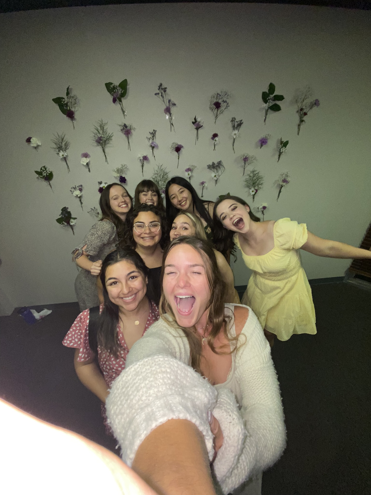
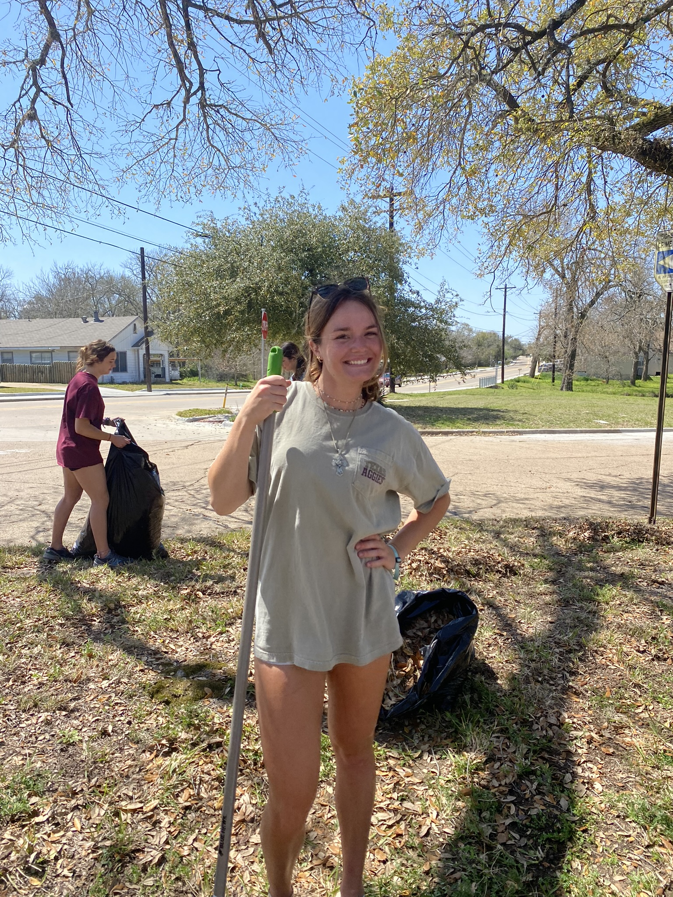

"for the community"
ASC
In ASC, we are introduced to many
like minded girls who contribute to weekly bible studies and
invigorate meaningful conversations among a group of women.
We volunteer in communities around the Bryan/College Station Area
approximating 6 to 10 hours a semester. These volunteer locations include the
food bank, Salvation Army, the Hope Center, and so many more non-profit organizations

BIG EVENT
For two years now, going on the third, Big Event has been a giant volunteer
event that occurs once a year. I have partaken in it with two different organizations and
have been able to assist a church and a school in improving their outdoor facilties and
appearance. It has been a great experience every year, meeting the people and creating new friends.
Last year, I operated as team lead and organized my group of volunteers.

CHURCH
During the summer and growing up, I help out with childrens care and teaching
at the church that I attend. Being unpaid, you must still watch certification videos to ensure
that one knows how to operate with a struggling child. I would build relationships and mentor the
children in their growth with Christ, morals, and ethics. This would be two times a week, on Sunday Mornings
and Wednesday evenings.